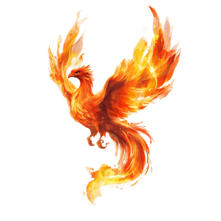
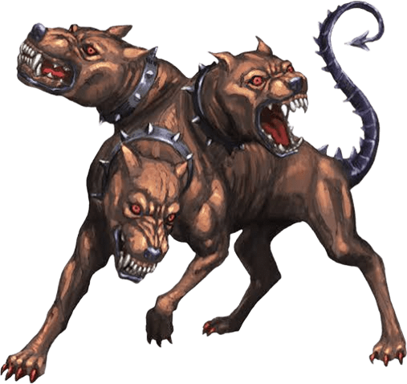
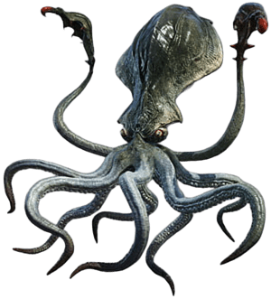
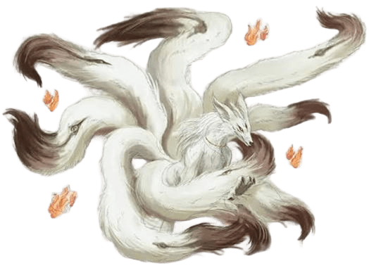

Le classement
Voici mon top 5 de mes créatures mythologiques préférées,
venues des quatre coins du monde.
| Rang | Créature | Origine | Apparence | Pouvoir principal | Puissance | Illustration |
|---|---|---|---|---|---|---|
| 1 | Phénix | Égypte ancienne, repris par les Grecs | Grand oiseau au plumage rouge et or, entouré de flammes | Renaître de ses cendres après sa mort | 4,5/5 |  |
| 2 | Le canard TPT (version swag) | inconnue (sûrement depuis l'origine de ce monde) | Canard pas si banale que ça | Personne ne saît mais apparament il peut tous faire | 10/5 | |
| 3 | Cerbère | Grèce antique | Chien géant à trois têtes, queue de serpent | Garder l'entrée des Enfers (force brute) | 4/5 |  |
| 4 | Kraken | Scandinavie (légendes de marins) | Monstre marin gigantesque à tentacules | Faire couler des navires entiers | 5/5 |  |
| 5 | Kitsune | Japon | Renard à plusieurs queues (jusqu'à neuf) | La métamorphose, l'illusion et la manipulation des pensées | 3,5/5 |  |